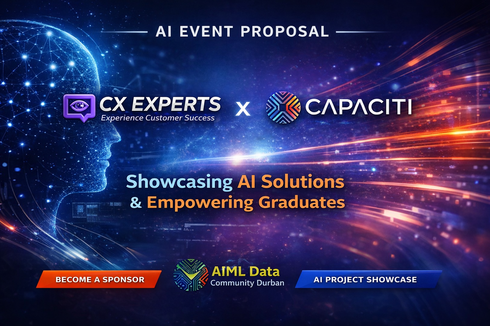
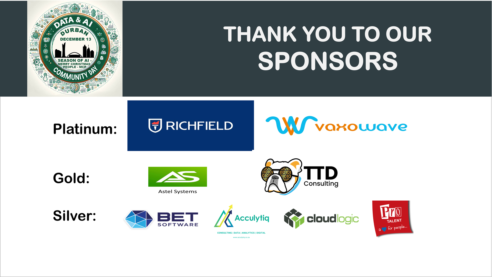
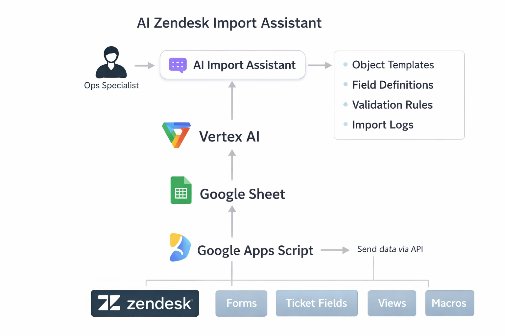
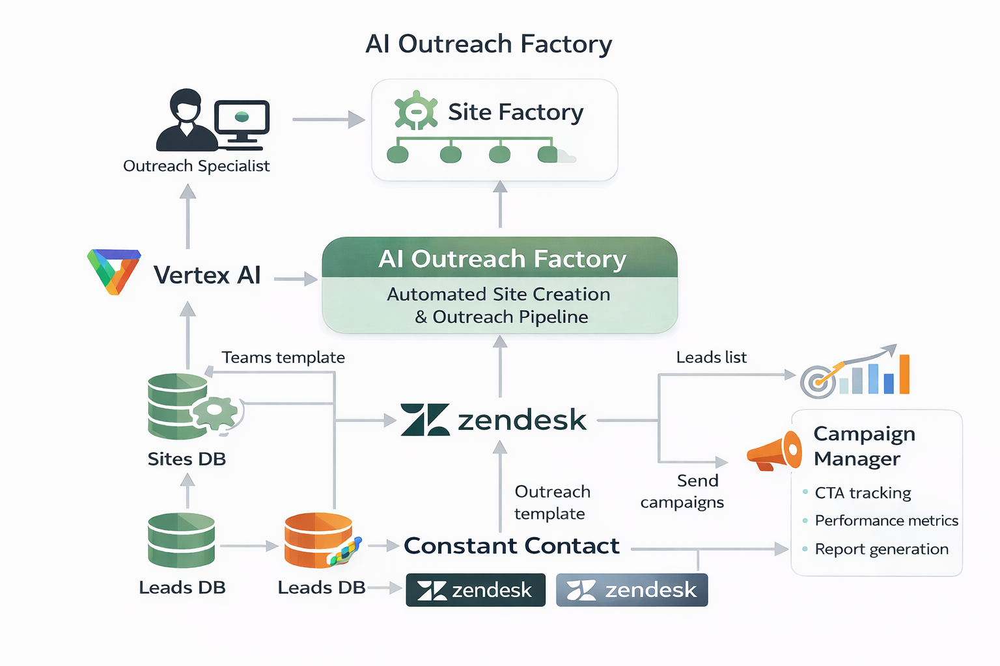
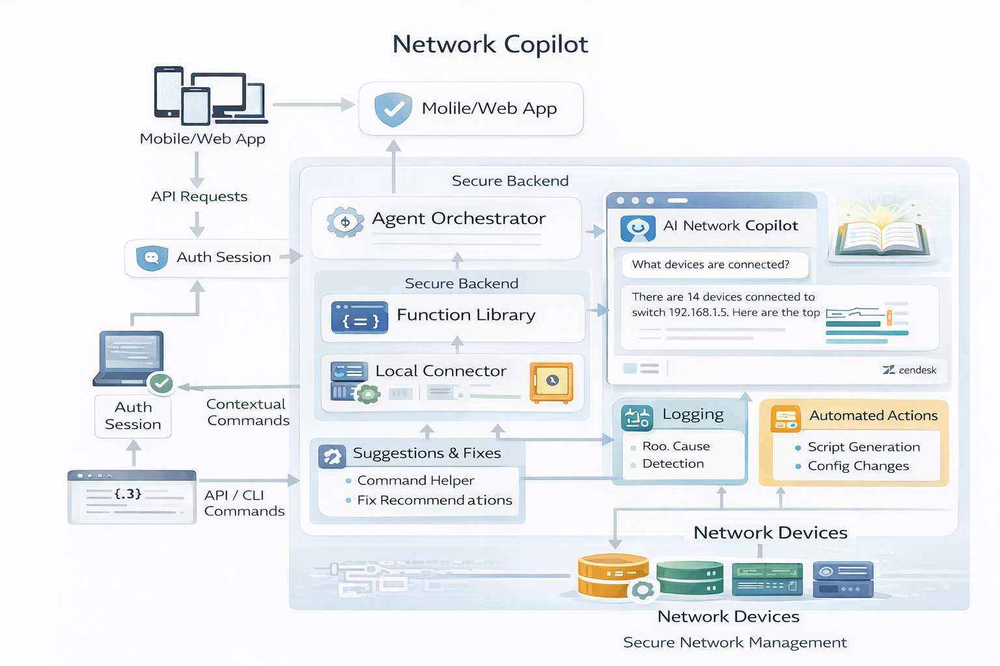
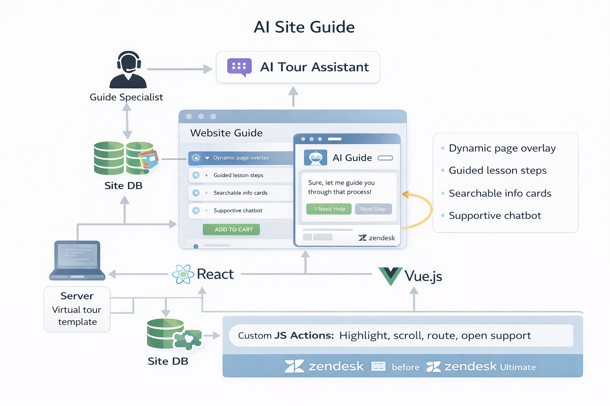
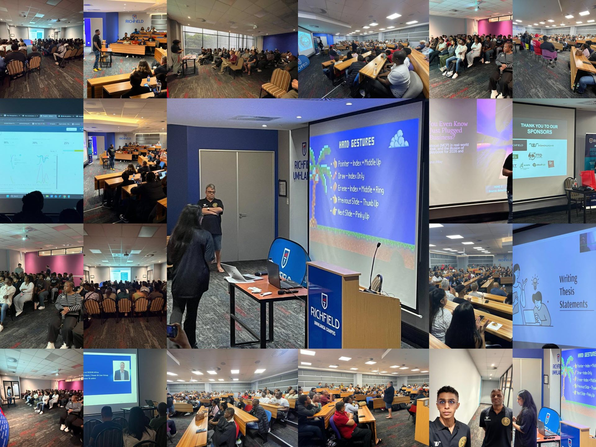
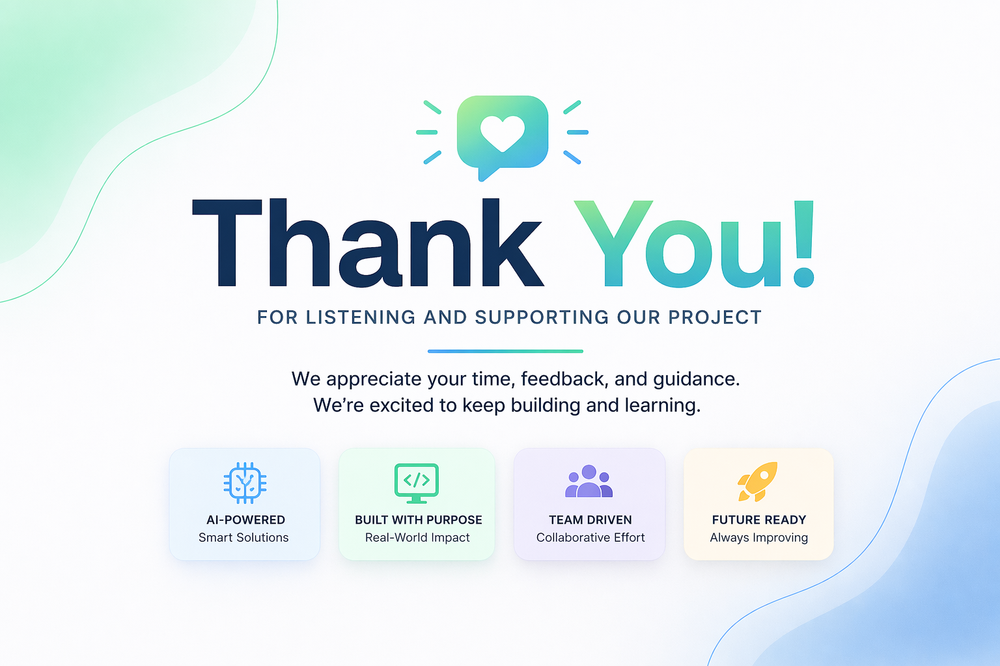

What Capaciti gains
- Public graduate exposure through practical demos
- Clear proof that training leads to real implementation output
- Stronger partner credibility through visible project delivery
- A stronger employability and skills growth narrative
AI Event Proposal
A focused event plan built around brand presence, public project demos, and practical AI delivery that can be reused after the event.
This proposal page is the showcase layer. Official public event and community details are hosted on the external AI/ML & Data Community Durban platform.

About the Event
The AI/ML & Data Community Durban platform is a community-run hub where people explore event details, speakers, agenda, venue information, and broader community activity across Durban’s AI and data ecosystem.
Official Event Public community and event information lives on the external site links below.
Also browse Culture / Community Principles for community expectations and event ethos.
Why This Matters
See the public event community and current event details on AI/ML & Data Community Durban and the AI Unplugged event page.
Co-branded presence, stronger partner perception, reusable event media, and a clearer collaboration story between skills development and implementation.
Sponsor Visibility
Treat the event as a visibility campaign, not only attendance. The goal is formal partner presence plus a dedicated project showcase slot.
For public-facing event context, use the official event page and community platform.
Co-branded banners at the venue and showcase area.
A physical activation point for project follow-up and networking.
One slot to present all main projects in a coherent sequence.
Logo merge slides, stage visuals, and event collateral.
Pre-event, live-event, and post-event content with proof points.
A concrete narrative of graduate output and practical AI execution.

Main Showcase
Each project is presented as a card with an expandable breakdown so the page stays visual while still carrying technical depth.
These are proposal showcase concepts aligned to the wider event context. For official public information, visit the event page and Durban community site.
Convert plain-language implementation requests into structured configuration that can be reviewed and pushed into Zendesk.
Process
Light tech direction

Project Support
Mohammed FarhaanTurn business input data into generated site content, outreach messaging, and a controlled publish workflow.
Process
Light tech direction

Project Support
Iqsaan MiaInterpret technical support questions and return structured network or device insights in clear language.
Process
Light tech direction

Project Support
Solomon DavidGuide users to the correct page, link, or support path by interpreting plain-language intent.
Process
Light tech direction

Project Support
Paven GovenderHow Showcase Works
Branded banners, co-branded slides, a stall or desk area, and one structured showcase slot that runs the demos in sequence.

Next Step
This proposal is strongest when approved as a focused campaign with clear ownership, clear sponsor visibility, and clear project scope.
